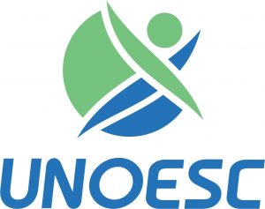
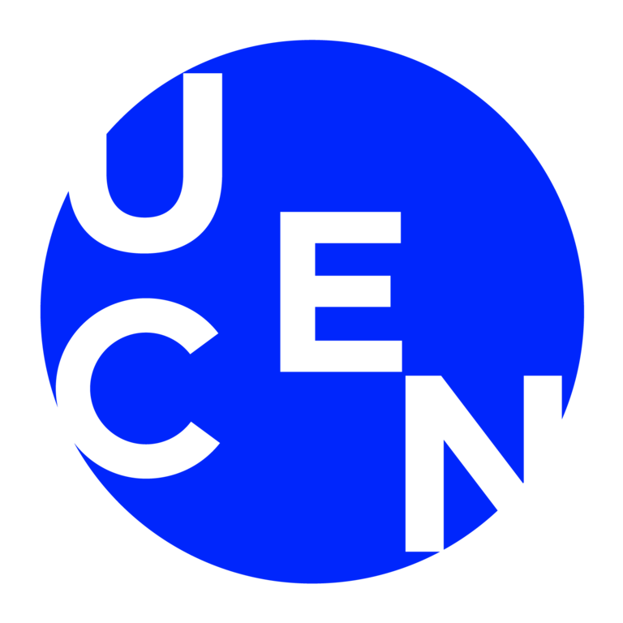

Esta es una carrera para personas a las cuales les gusta impulsar la innovación mediante el uso de la tecnología, la digitalización y la automatización para cambiar el mundo, con una visión emprendedora, que permita planificar, gestionar y liderar grandes proyectos informáticos.
Historia
Plan de estudios
Nuestro plan de estudios ha sido diseñado bajo estándares nacionales e internacionales, según recomendaciones de la Association for Computing Machinery (ACM) y la Guía del cuerpo de conocimientos de ingeniería de software (SWEBOK) del IEEE.
Nuestros estudiantes serán capaces innovar mediante el uso de la tecnología, la digitalización y la automatización para cambiar el mundo, con una visión emprendedora, que permita planificar, gestionar y liderar grandes proyectos informáticos.
Beneficios y servicios
Al elegir la carrera de Ingeniería de Sistemas e Informática en la Universidad Continental, tendrás acceso a una amplia variedad de convenios y servicios diseñados para impulsar tu desarrollo académico y profesional de la mejor manera. Con estos recursos, mejorarás tus conocimientos y también te ayudarán a expandir tus habilidades personales y a posicionar tu empleabilidad.
Beneficios
Servicios
Campo Laboral
Perfil del Egresado
Convenios
Contamos con un convenio de doble titulación y varios convenios de intercambio estudiantil.

Universidad del Oeste de Catarina - Brasil Universidad Andrés Bello - Chile Universidad Autónoma de Mexico

Universidad Central de Chile